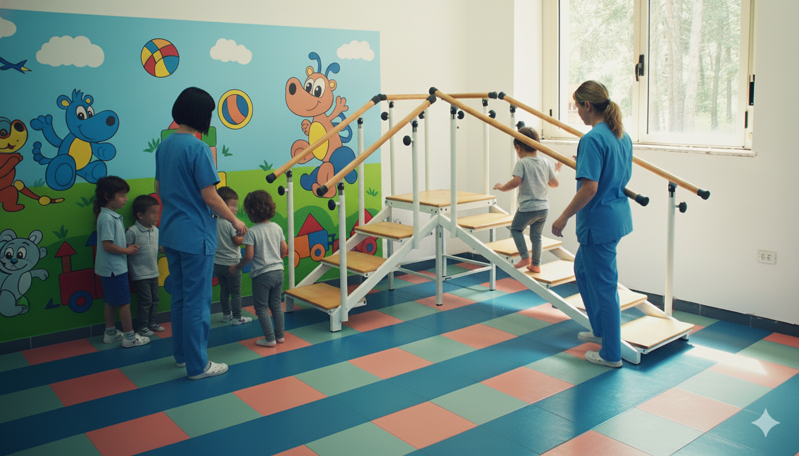
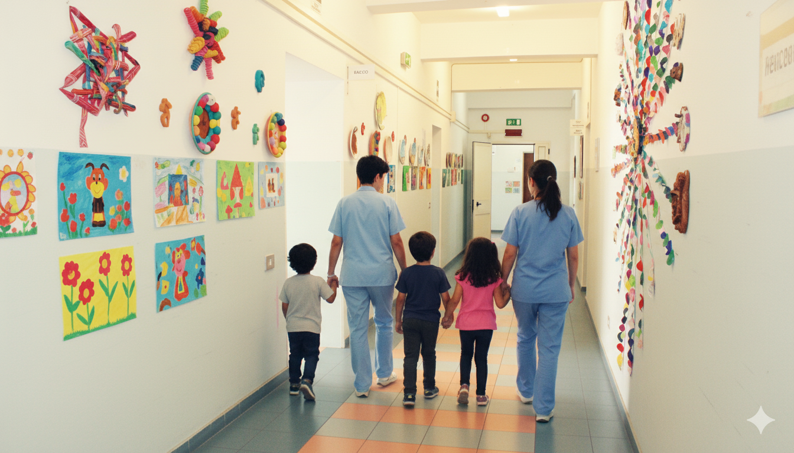
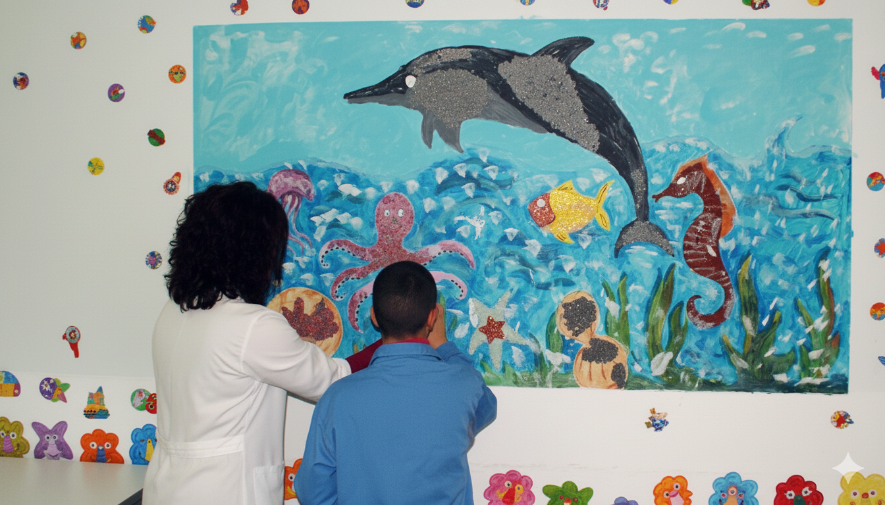

Centro Riabilitativo
Ce.J.Ri è il primo centro riabilitativo della Locride
Un punto di riferimento per la riabilitazione neuropsicomotoria, logopedica e cognitiva nel territorio della Locride
15+
Anni di esperienza
120+
Pazienti all'anno
30+
Professionisti
Riabilitazione
Cura Personalizzata
Accreditato SSN
Dal 2008
Ce.J.Ri accreditato con il Servizio Sanitario Nazionale
Un riconoscimento istituzionale che garantisce la qualità e la professionalità dei nostri servizi
2008
Accreditamento
100%
Convenzionato
SSN
Accreditato

Qualità Certificata
Team Specializzato
Sicurezza
Capacità
56 pazienti giornalieri
Servizi ambulatoriali, semiresidenziali e domiciliari convenzionati per garantire la massima accessibilità
56
Pazienti/giorno
3
Modalità di servizio
6
Giorni settimana

Ambulatoriale
Domiciliare
Semiresidenziale
Il Nostro Team
30 professionisti altamente specializzati
Logopedia, Neuropsicomotricità, Fisioterapia, Psicologia, Terapia occupazionale, Educatori professionali, Infermieri, Assistenti sociali, Pedagogisti e Operatori socio sanitari
10+
Specializzazioni
3
Modalità
100%
Personalizzato

Alta Formazione
Competenza
Dedizione